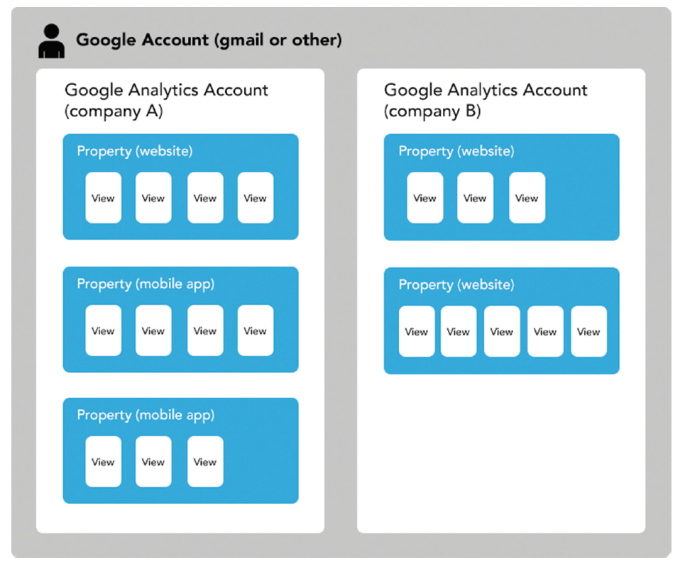

GA 的帳戶結構與報表地圖
在本單元中，會介紹 Google Analytics 的帳戶、資源、檢視三層怎麼組起來，五組報表分別回答什麼問題，以及目標與歸因為什麼決定了整份報表要怎麼讀。
🎯 學習目標
| # | 你會的能力 | 讓你能解釋的真實問題 |
|---|---|---|
| 1 | 說出帳戶、資源、檢視三層各管什麼，以及檢視篩選為什麼不可逆 | 為什麼老師一直說「一定要留一個沒有篩選的檢視」？ |
| 2 | 拿到一個問題，指出該去哪一組報表找答案 | 「我們的讀者用什麼裝置看？」要去哪一張報表？ |
| 3 | 判斷一組報表資料能不能拿來下這個決策 | 地區報表顯示三成流量來自台北，可以據此決定辦活動的城市嗎？ |
🤖 課前 AI 互動（10 分鐘，上課前完成）
請利用 AI 當成你的學習助理，請輸入下列提示
請說明 Google Analytics 的帳戶（Account）、資源（Property）、檢視（View）三個層級各自的功能，以及一家公司有兩個網站和一個 App 時應該怎麼配置。說完之後，請告訴我 GA4 和舊版 Universal Analytics 在這個結構上有什麼不同。
然後追一句：
如果我在檢視層設了一個篩選器，把公司內部 IP 的流量濾掉，三個月後我想把那些資料找回來，做得到嗎？請直接回答做得到或做不到。
它的答案等一下會被驗證。這一題是證照考題的常客。
檢視層的篩選是在資料寫進去之前就把它丟掉，不是在顯示的時候藏起來。丟掉的資料永遠找不回來。所以實務上的鐵則是：一定要留一個完全沒有設過任何篩選的檢視當底稿。這一條在 GA4 換了做法，但觀念仍然要記得，因為考題還在考，而且其他分析工具也有同樣的坑。
進行方式 ① 三層結構與那條不可逆的規則
- 帳戶管權限，資源管一個網站或 App 的資料，檢視管要怎麼看這份資料。
- 檢視層的篩選是破壞性的：被濾掉的資料不會被保留。
- 這一段結束你要能畫出三層結構，並說出留一個乾淨檢視的理由。
一個 Google 帳號可以掛很多個分析帳戶

一個 Google 帳號底下可以有多個分析帳戶（通常一家公司一個），每個帳戶底下有多個資源（一個網站或一個 App 一個），每個資源底下有多個檢視。
分層的目的是分權。帳戶層決定誰看得到、誰改得動；資源層是資料真正被收進來的地方；檢視層是同一份資料的不同看法。
資源是資料的容器，換資源就是換一份資料
一個網站一個資源，一個 App 一個資源。兩個資源的資料不會互通——這就是為什麼跨網站看同一個人這麼困難。
檢視是同一份資料的不同看法，但篩選會真的丟掉東西
檢視層可以設篩選器：只看某個目錄、排除內部 IP、只看某個國家。
篩選掉的資料不會被保留。這是最上層的篩選器，資料在寫進這個檢視之前就被丟了。三個月後想找回來，做不到。
所以永遠要留一個沒有篩選的檢視
實務鐵則：每個資源至少留一個完全沒有設過任何篩選的檢視當底稿，其他檢視隨便你切。
這一條在證照考題出現的頻率很高，原始投影片直接標了「必考」。
GA4 拿掉了檢視這一層，但坑還在
GA4 的結構變成帳戶 → 資源 → 資料串流，沒有檢視。要做類似的事，改用資源層的資料篩選或報表層的比較功能。
這個觀念仍然要記得，理由有兩個：證照題庫還在考舊架構，而且「在資料進來之前就丟掉」這種設計在其他工具裡到處都是。
進行方式 ② 五組報表各回答一種問題
- 報表不是一堆表格，是依照使用者歷程排的五組：即時、目標對象、客戶開發、行為、轉換。
- 記住「ABC」這個順序：Audience（誰）→ Acquisition（怎麼來）→ Behavior（做了什麼）→ Conversion（有沒有達成）。
- 這一段結束你要能拿到一個問題就指出該去哪一組。
即時報表：只回答「現在正在發生什麼」
以秒為單位看當下的流量與來源。它的實際用途只有兩種：內容剛發布時看有沒有起來，以及出事的時候看災情。
不要拿即時報表做任何需要比較的判斷，它沒有歷史。
目標對象：這些人是誰、用什麼看
這一組回答「誰」。裡面最常用的幾張：
| 報表 | 回答什麼 | 要小心什麼 |
|---|---|---|
| 活躍使用者 | 1／7／14／28 日活躍 | 就是上一節的 DAU／WAU／MAU |
| 同類群組（Cohort） | 某一批新使用者後續幾天還在不在 | 是留存率的正規做法 |
| 客層（年齡、性別） | 使用者輪廓 | 是推估值，不是填答資料 |
| 興趣 | 興趣相似目標對象、潛在目標消費者 | 分類很複雜，跨期比較前先確認定義沒變 |
| 地區 | 使用者在哪 | 台灣的判定不準，見下一段 |
| 技術與行動裝置 | 瀏覽器、作業系統、螢幕解析度、裝置類型 | 螢幕解析度對做版面的人最重要 |
| 使用者總覽（User Explorer） | 單一使用者的完整行為序列 | 隱私上很敏感，見下一段 |
技術報表裡最有用的是螢幕解析度
瀏覽器、作業系統、網路、螢幕色彩都有人看，但對做內容和做版面的人來說，螢幕解析度與裝置類型（電腦／手機／平板）最有用——它直接決定你的版面要怎麼排、圖要做多大。
地區報表在台灣不準
地區是用 IP 反查的。台灣的固網與行動網路 IP 配置讓這個反查經常指向機房所在地，不是使用者所在地。
看到「三成流量來自台北」不要當成使用者分布，那可能只是電信商的出口在台北。
User Explorer 看得到單一使用者的完整行為
它可以攤開某一個 client ID 的每一次造訪、每一頁、每一個動作。
原始投影片對這張報表的註記是「有點噁心」——那是一個誠實的反應。技術上做得到，不代表你應該去看。分析的職業倫理從這裡開始：你手上有的資料，遠比使用者以為的多。
客戶開發、行為、轉換分別對應前三節
客戶開發就是 流量從哪裡來 Source Medium 與 Channel，行為就是 停留、跳出與離開，轉換是下一段要講的目標。
這門課到目前為止教的每一個指標，都住在這四組報表裡。報表本身不必背，知道它們按什麼順序排就找得到。
進行方式 ③ 目標決定整份報表怎麼讀
- 目標（Goal）是你自己定義的一個完成動作，達成一次就是一次轉換。
- 沒有設目標的報表只能描述行為，不能回答「這樣算好嗎」。
- 這一段結束你要能替一個你熟悉的網站寫出一個具體的目標。
目標是有商業或社會價值的行動
Google 的定義：目標用來衡量網站或 App 達成營運目標的程度，一個目標代表一次完成的活動，稱為轉換。
常見的四種：抵達某一頁（完成頁）、停留時間或頁數達到門檻、完成某個事件（下載、播放、送出表單）、電子商務交易。
目標通常會帶一個金額
即使不是電商，也可以替目標估一個金額——一次電子報訂閱值多少、一次表單填寫值多少。
帶了金額，報表才算得出「哪一個來源比較划算」。沒有金額，你只能比次數。
沒有目標的報表只能描述，不能判斷
跳出率、停留時間、頁數，全部都是描述。「這樣算好嗎」這個問題只有在有目標之後才回答得了——這正是第一週那三個檢查裡「比較對象」的最終形式。
廣告的成本指標是另外一組
CPM（每千次曝光成本）、CPC（每次點擊成本）、CPV（每次觀看成本）、觸及、曝光——這些是花錢那一側的指標，會在 W4 展開。
在這裡只要記得一件事：成本指標要跟目標的金額配著看，才算得出投報。
歸因決定功勞算在誰頭上
歸因模式是一組規則，用來決定轉換路徑上的每一個接觸點各分到多少功勞。最終互動把 100% 給最後一個點擊，最初互動把 100% 給第一個。
同一批資料，換一個歸因模式，各管道的「貢獻」會整個重排。所以看到「某某管道帶來 40% 轉換」，第一句要問的是用哪一種歸因。
進行方式 ④ 跟別人比：基準化報表
- 基準化（Benchmarking）拿你的資料跟同產業願意分享資料的其他公司比。
- 可比的維度只有三個：管道分組、地區、裝置。
- 這一段結束你要能說出這份比較的兩個限制。
可以比的六個指標
工作階段數、新工作階段百分比、新使用者工作階段數、單次工作階段頁數、平均工作階段時間長度、跳出率。
都是這門課前幾節講過的東西——你現在具備讀懂這份比較的全部條件。
兩個限制要先講清楚
第一，樣本是自選的。只有選擇分享資料的公司才在裡面，那些公司未必代表整個產業。
第二，產業分類是自己填的。分類填得寬鬆或不精確，比較對象就不對。
它最好的用法是找方向，不是打分數
基準化適合回答「我在這個維度上跟同業差很多嗎」，不適合回答「我及格了沒」。
跟自己的歷史值比，永遠比跟基準比可靠。
每一份比較資料都有一個沒說出口的樣本。看比較之前先問「跟誰比」，比看排名有用得多。
⚠️ 迷思攔截
| 常見迷思 | 為什麼太簡化 | 攔截 |
|---|---|---|
| 「檢視的篩選只是把畫面藏起來」 | 篩掉的資料不會被保留，找不回來 | 永遠留一個沒有篩選的檢視 |
| 「GA4 沒有檢視了，所以這個不用學」 | 「進來之前就丟掉」的設計在別的工具裡到處都是，而且考題還在考 | 學的是機制，不是介面 |
| 「地區報表可以看使用者分布」 | 台灣的 IP 反查常指向機房，不是使用者所在地 | 要做地區決策就另外找資料 |
| 「客層報表是使用者填的」 | 那是推估值，來自廣告生態的推論 | 當成方向，不當成事實 |
| 「User Explorer 只是個功能」 | 它攤開單一個人的完整行為，遠超使用者的預期 | 技術上做得到不等於應該看 |
| 「某管道帶來 40% 轉換」 | 沒說歸因模式，這個數字沒有意義 | 先問用哪一種歸因 |
| 「基準化報表就是產業平均」 | 樣本是自選的，產業分類是自填的 | 跟自己的歷史值比更可靠 |
先修與後續
- 先修：黏著度指標 DAU WAU MAU 與 Frequency——W2 四個模組教的指標，這一節告訴你它們各自住在哪。
- 後續：GA4 與 AI 問答分析（W3）——有了地圖之後，才輪到把報表貼給 AI 問問題。
- 平行相關：廣告數據與成效分析（W4）——成本指標與歸因會在那一節完整展開。
- 平行相關：Data Bias 資料偏誤——地區不準、客層是推估、基準樣本自選，三個都是同一類偏誤。
💬 討論／分享／反思
判例演練
請兩人一組，說出下面五個問題各該去哪一組報表找答案，並寫出你會看哪一個指標：
- 我們的讀者主要用手機還是電腦看？
- 上週那篇爆紅的文章，讀者是從哪裡來的？
- 這個月的新讀者裡，有多少人第二週還會回來？
- 首頁改版之後，有比較多人點進文章嗎？
- 剛剛發的那則貼文，現在有多少人在線上看？
第 3 題最容易答錯，寫下你為什麼選那一張。
配對分享
請同學兩兩一組，各替一個自己熟悉的網站或帳號設計一個目標：
- 寫出這個目標的具體完成條件（要能被工具偵測到）
- 替它估一個金額，並說出你怎麼估的
- 對方要追問「達成這個目標的人，真的比較有價值嗎」
寫下反思
請寫下這一句並補完：
這一節裡最讓我不安的是＿＿＿，因為＿＿＿。
小作業
挑一個你有權限的分析後台（沒有的話用 Google 的示範帳戶），完成三件事：
- 找出它的資源與檢視（或資料串流）各有幾個
- 找出「裝置類別」報表，抄下手機與電腦的比例
- 寫一句話說明「這份資料我不會拿來決定什麼」，並說出理由
學生版｜更新於 2026-09-13 01:45